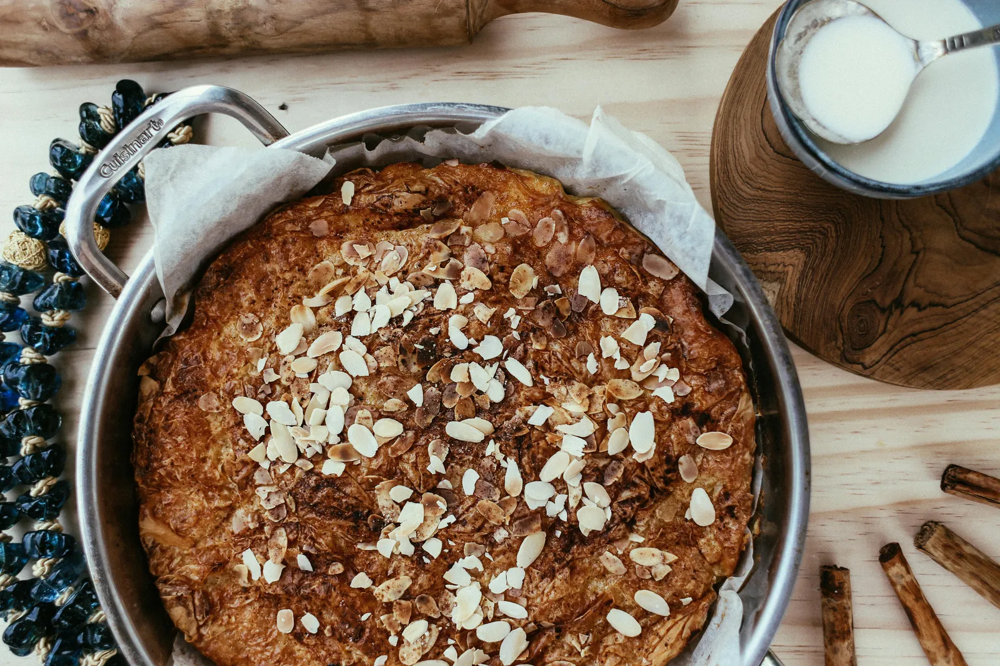
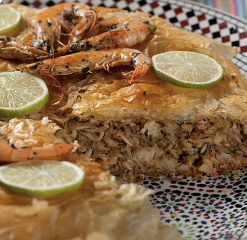
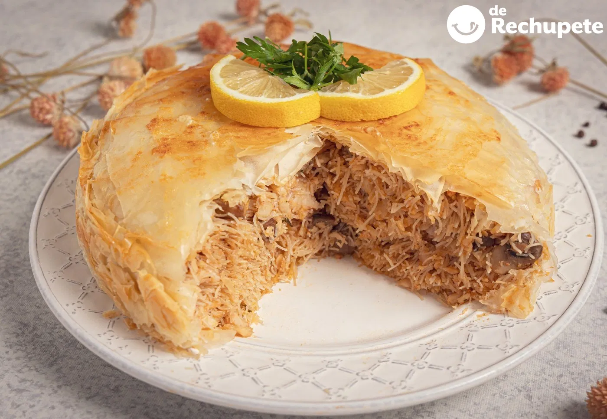
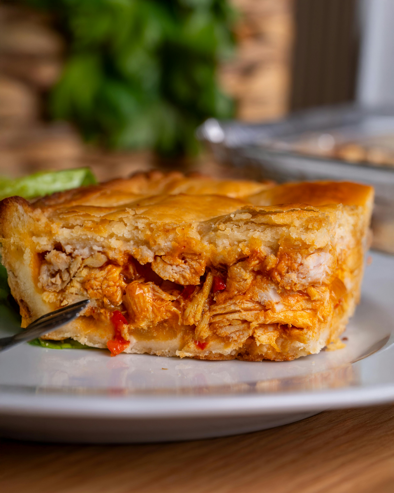

La pastela es una de las recetas más elegantes de la gastronomía marroquí. Destaca por su mezcla de sabores dulces y salados y por su presencia en celebraciones y reuniones familiares.
Su elaboración combina una masa fina y crujiente con un relleno especiado, lo que la convierte en un plato muy representativo de la riqueza culinaria de Marruecos.
Tradicionalmente, la pastela se prepara en ocasiones especiales y refleja la importancia de la hospitalidad en la cultura marroquí.
Cómo se prepara la pastela
Descubre paso a paso cómo se elabora la pastela marroquí, una receta que combina sabores dulces y salados en una preparación única. Este plato tradicional requiere paciencia y técnica, pero el resultado es espectacular.
Galeria
Una selección de imágenes que muestran la textura crujiente, los detalles del relleno y la presentación de la pastela en la cocina marroquí.


